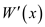
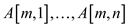

Dynamic programming approach for finding the longest weighted simple path from s to t .
• Sort the given directed acyclic graph in a topological manner.
• Calculate the longest path to the vertices one by one which should be sorted.
• Initialize the distance of start to zero which comes at first
and last node which is named as  .
.
• Pick a vertex at every iteration and compare for every vertex u that is connected to v via an edge and compute the longest path.
• There will be a sub-problem in every iteration that is used to find the simple weighted path which is longest from s to the current node v.
• Calculate all the vertices.
• is (or the maximum distance among all the vertices) is the longest weighted simple path from s to t.
To compute the longest path for every vertex:
• The given algorithm sorts the graph in a topological manner in such a way that it checks all the edges by visiting every vertex.
Efficiency of the algorithm:
• It takes which is the efficiency of the given algorithm.
Let A [1…n] denote the array that has the word “carac”. If a palindrome is a subsequence, it must be divided at any position say j and solve for the longest common subsequence problem A [1…j] which is the first subsequence and A [j+1…. n] which is the second subsequence. Therefore, there are n positions on which there is possibility of splitting input word and the longest common subsequence takes the time . The time for solving palindromes is
Algorithm: Find All Palindrome Subsequences(S)
Input: A string S=
Output: All palindrome subsequences of S.
1. //finding out matched pair 
for i=1 to n
2. for j=i+1 to n do
3.  if
if
4. W: = (i, j)
5.
6. //finding all palindrome subsequences of S
for k=2 to n/2
7.
8. for all k-1-pallindrome (…….from
Bitonic euclidean traveling-salesman problem:
In the travelling salesman problem a set of n points is given which represents the cities that are travelled by the salesman to sell his products. For this set of points we find the path which is shortest and connects all the n points. This is the NP-hard problem and so it possesses the polynomial time complexity.
A bitonic tour is a closed polygon chain in the Euclidean plane such that any vertical line will cross the chain at most twice. Open bitonic tour is a bitonic tour which has two end points so bitonic tour is an open bitonic tour with same end points.
For any two vertices in the set n the travelled distance or the length of path between two points is and OPTIMAL-BITONIC-SOLUTION(1, n) is used to calculate the best path with minimum weight for the bitonic tour as it will tell us the shortest open bitonic tour from vertex 1 to vertex n.
The possible cases while we go for calculating the solution for the travelling salesman problem are as:
Case 1:
if
Then the only possible path from i to j will be covering all the points in order. For calculating OPTIMAL-BITONIC-SOLUTION(i, j) we need to have all the points which are at the left of j. So there is only one single way in which this can be done and bitonic property is also maintained at the same time and that way is to take all the vertices in order of their increasing x coordinates.
In order to calculate OPTIMAL-BITONIC-SOLUTION(0, j)we need to calculate OPTIMAL-BITONIC-SOLUTION(0, j-1) which is as:
Case 2:
if
Then in order to reach j you have to come from j-1 so here also the recursion will go the same way as before. If you don't come from j-1 to then either j-1 will be an end point which is not possible because only end points are i and j or it could be connected to some point with less x coordinate which is also not possible because in that case it won't be bitonic any more.

Case 3:
if 
In this case we have possible paths or possible vertices from which we can reach to vertex so we will choose that for which total cost is minimum. In other word
The procedure for the logic in case 3 is as:
1. for
2. if
3.
In this algorithm the variable min contains the shortest path.
Optimal Substructure:
The recursive relations are there in all the 3 cases in which the optimal solution to the problem comes from the optimal solution to the sub-problems.
So the problem is exhibiting the optimal substructure property.
Overlapping Sub-problems:
As for calculating the optimal solution to the problem we need to calculate various sub-problems many of the times which show overlapping sub-problems.The procedure for Optimal Bitonic Solution is as in which for all n points in the set,
, the path for will include all the points which are at left of j. Initialize all the elements in array M by
1. if
2. return
3. if or
// recursive calling to the function
4.
5. else
// initial value of shortest path
6.
7. for
8. if
9.
10.
11. return
Here the shortest path is calculated from vertex 1 to vertex n such that the summation of the weight of the edges included in the path is minimum. The number of vertices included are n so this algorithm takes a polynomial time which is.
Dynamic Programming
Dynamic programming is one of the techniques for designing algorithm, for providing the solution to optimization problems. Optimization problems are those in which there is a need to make number of decision. It is applied when sub-problems are dependent upon each other.
Dynamic Algorithm Plan:
The dynamics programming approach is applies to that problem in which there are problems of sub-problem are given. In this approach first the sub-problems are solved and then the results are used to solve the main problem.
If all the words fit in one line, then there is nothing to solve in the printing neatly problem. If the words exceed one line, then an optimal solution for a single line should be found as it is the only line to be filled.
Now, add up these optimal solutions for every line in the
complete solution to find an optimum solution to that sub-problem.
To print, words of
length of characters the total number of characters are as:
words of
length of characters the total number of characters are as:
Steps of Dynamic Programming: There are different steps which are used for creating algorithm for dynamic programming. These are as follows:
1. Determine the optimal solution’s structure.
2. Define the optimal solution’s value recursively.
3. Apply bottom-up approach for calculating the value of optimal solution.
4. By using calculated values develop an optimal solution.
Printing neatly: Printing neatly describes the rules for
printing the paragraph in the formatted way that is all character
having same width on a printer. It is required to print the
paragraph of words of
length characters
and
characters per line.
Criterion of “neatness” is as: a line contains words  through
through
 where and only
one space can be used between words. The number of spaces which are
required additionally at the end of the line is and it must
be a positive value.
where and only
one space can be used between words. The number of spaces which are
required additionally at the end of the line is and it must
be a positive value.
Based on the above formatting rules; implementinga dynamic programming algorithm which can be used as to print the paragraph of n words and measurement of its running time and space requirement.
Illustration of printing neatly problem by using an example
“ Printing neatly describes the rules for printing the paragraph ”
Consider the above example and width of line M is 16. Optimized solution for the string is as follows:
Line 1: Printing neatly
Line 2: describes the
Line 3: rules for
Line 4: printing the
Line 5: paragraph
Optimized solution of the string comes in 5 lines.
Now, calculate the extra space in all the lines of the optimized arrangements.
Consider the following tabular structure for showing extra space within it corresponding line:
|
Line number |
Extra Space |
|
Line 1 |
1 |
|
Line 2 |
3 |
|
Line 3 |
7 |
|
Line 4 |
4 |
|
Line 5 |
7 |
From the above example, it is clear that all the lines used extra spaces. Due to extra spaces, total cost of all the lines and cost of one line are calculated as shown below:
Here, c is the cost of one line. Hence, cost for the line numbers from 1 to 5 is as below:
Here, T is the Total Cost of all the lines. Now, the total cost is:
From the example, it is clear that extra space consumption is more. So, it is needed to balance the extra spaces this is done with the help of cost function. This there can be represented in another ways by taking two same groups of words.
1. There are 5 lines and there are 5 extra spaces in one line and remaining line have no extra spaces.
Total extra spaces c= 5+0+0+0+0=5.
Total cost of all the line T=53 + 03 + 03 + 03 +03 =125
2. There are 5 lines and there is 1extra space in all the lines.
Total extra spaces c= 1+1+1+1+1=5.
Total cost of all the line T=13 + 13 + 13 + 13 + 13 =5
Thus in both the situations, there are 5 extra spaces, but second situation is preferred as spaces are maintained in consecutive 5 lines. As total cost function of second situation is less in comparison to the first situation.
PRINTING-NEATLY
The algorithm by considering the above dynamic algorithm plan and definition of printing neatly is as:
// checking that all words are filled in one line or more
1. if all words fit in one line
2. return “no need of formatting”
// j can be fit in line starting with word i.
(Now, try to fit all combinations in this line and then solve possible combinations of the remaining words; for finding the optimal layout, summation of minimum cost in first line and the remaining sub-problem is done)
// for words exceeding in more than one lines
3. else
// now taking a variable because space which are additionally needed at the end // of the line is and it must be a positive value
be the largest j for which
4. Fill an array of,
whereis the minimal cost of printing words i through n
// now comparing to number of elements in array of cost c
5 if
6. then
7. else
// now reducing the sum, in all lines leaving the last one, of the cubes of
// number of character of extra spacein the end of lines
Time requirement analysis:
For calculating the running time, consider the following points:
1. For the analysis of time complexity assume that for ,then
.
So, the length of the characters in the line , can be
calculated in  time.
time.
2. In the end of each line there are some extra spaces left, which are for the words from i to j. As from the above point can be represented as so, the cost in line 4 of the algorithm can be calculated as:
The values , are already
calculated, so it will take only
, are already
calculated, so it will take only  time to
calculate the cost of each line.
time to
calculate the cost of each line.
3. If all the words are comprised in the same line of paragraph then the line cost will be zero. In the line 7 of algorithm the cost is the overall optimal cost of printing the all the words in the paragraph.
4. Now, each line has maximum of M characters and there is one apace between each word then there will be maximum of words. So, the last line will have to j words.
So, the printing cost of a line can be summarized as the printing cost of words and the line cost and is represented as:
.
5. For printing words its
cost will be which will
be
which will
be for n words.
for n words.
The total running cost of the printing neatly problem will be the summation of all the costs:
But, M is constant for each line so the total running
cost of the printing neatly problem is. Hence, the
running time of this algorithm for printing n words in
format is
Space requirement analysis: In the algorithm we have to
store the values of, length of
each word and cost of
each lineand each
will need space. So,
the total required space will be. But, 3 is
the constant so, it can be ignored. Hence, the total required space
for printing in the format will be.
Edit distance:
Supposed strings are and
The problem of transforming one string into another string, then an intermediate array z, is uses a series of transformation operations.
At the termination of transformation
for.
Here j is the current position in array z and i is the current position in x and we examine each character in the array x so after transformation.
Edit distance problems are one the most famous dynamic programming problems having practical applications in spell checkers and dictionary searching.
Optimal Substructure:
For this problem of string transformation from one string to other using a set of transformation operations a slightly complex but easy to understand recurrence relation holds:
(
,
 ,
,
,
,
 )
)
In this problem of finding edit distance the optimal solution for the sub-problems will yield optimal solution for the given problem. Hence the edit distance problem possesses the property of optimal substructure.
Overlapping sub-problems:
As most of the sub-problems will be repeated again and we solve the above recursion so
the problem possessesoverlapping sub-problems property and so it own both the properties that makes it dynamic programming solvable.
The algorithm for edit distance is as:
Initialize all the values for the 2D matrix M
1.
2. return 0
3.
4. return
5. else
6. (
,
,
,
,
)
7. returnThe total time required to run this algorithm in the transformation of anstring of length m to the string length n requires and the space to run this algorithm is required is.
b )
The optimal alignment of an edit distance using the some transformation operations as substitution, insertion, killing and twindle.
The edit distance uses the cost table
|
Operation |
Cost |
|
Copy |
–1 |
|
Replace |
+1 |
|
Delete |
+2 |
|
Insert |
+2 |
|
Twiddle |
|
|
Kill |
The DNA-alignment problem of string x to string y aligns the string sequences from any of the ends that is either it starts from left or from right end and releases the strings x’ and y’ after alignment.
For any alignment the different symbols are used in each process for example a space for the insert and the optimum alignment score is the largest of the minus value of the edit cost.The minus value of minimum edit cost is the negative value of the edit distance in the casting process.
The provided problem can be solved in linear time with the help of dynamic programming.
Suppose is the x employee conviviality and P is the set of employee. The provided problem is to determine the subset of employees whose sum of conviviality is more than any other subset, also subset contain either parent or its child.
Suppose the subset which contains list of these employees
is .
.
In dynamic programming, if one wants optimal solution of a problem then it is required to find the optimal solution of a sub-problem of same form.
Consider the following sub problem:
Suppose is the maximum possible sum of conviviality of employee of x rooted sub-tree when x is also invited. Suppose  is the maximum possible sum of conviviality of employee of x rooted sub-tree when x is also not invited.
The first equation contains the conviviality of all parents in x rooted sub-tree whereas the second equation contains the conviviality of all children in x rooted sub-tree.
The following algorithm is used to calculate the conviviality.
CALCULATE
1.
2.
3.
//loop continues iterate y is not null
4. while
5. do CALCULATE 
//determine conviviality of presence and absence of y
6.
7.
8. 
The above algorithm called with the president of the company. At the termination of the program the conviviality sum of the company get in terms of and . Now call following PARTY-LIST function to determine the list of guest which are called for the company party.
PARTY-LIST
//this part executes when employee get happy in presence of y
1. if 
2. Add x in party_list
//check x have grand children or not
3. if x does not have grand children
4. DISPLAY(party_list)
5. EXIT()
6. for all grandchildren  of
of

7. PARTY-LIST
//this part executes when employee get happy in absence of y
8. else
//check x have grand children or not
9. if x does not have children
10. DISPLAY(party_list)
11. EXIT()
12. for all children  of
of
13. PARTY-LIST
The final COMP-PARTY algorithms call both above algorithm to determine list of employee which are called in the company party and where employee conviviality is maximum.
COMP-PARTY
Call CALCULATE
Call PARTY-LIST
Explanation:
• At first call the CALCULATE function to determine the conviviality of each node when it is added in list and when it is not added in the list.
• After that, call PARTY-LIST algorithm to check whether conviviality of adding an x employee in list is more than conviviality of not adding employee in list.
• The employee name stored in the party_list contains the name of the employee which is invited in the party.
Time complexity:
• The CALCULATE procedure traverse the whole set P which contains n employees. A while loop is used in CALCULATE which repeatedly call CALCULATE procedure n times.
Therefore the time complexity of CALCULATE procedure is.
•
 . Ignore the
constant
. Ignore the
constant
When n is too large. Therefore the time complexity of
PARTY-LIST procedure is.
Hence, the total complexity of COMP-PARTY is
.
Seam Carving
In order to understand image compression by seam carving, it is necessary to know about seam and seam carving.
Seam : Seam is defined as connection of the pixel to form a path which is connected either by going from top to bottom or from left to right.
There are two types of Seam which are as follows:
1. Vertical seam: Vertical seam in an image is defined as a connection of the pixel to form a path by going from top to bottom. From each and every row it selects one pixel.
2. Horizontal seam: Horizontal seam in an image is defined as a connection of the pixel to form a path by going from left to right. From each and every row it selects one pixel.
Seam carving: Seam carving is a method which helps in resizing images and videos. It is a technique which helps in preserving undesirable distortion of the image. In this, remove the pixels which are not so important in order to create an image of the smaller size.
Process of Seam carving
Computation of the energy: Energy of the pixels provides the information about the important of the pixel. Energy function is directly proportional to the important of the pixel. If pixel is of less energy than it is least important otherwise it is of more important.
Energy function is calculated by adding the horizontal and
vertical seam value at each and every point with the help of filter
of size 3  3.
3.
Here,  represents
the vertical seam and represents
the horizontal seam. In this energy of each pixel is represented by
energy matrix.
represents
the vertical seam and represents
the horizontal seam. In this energy of each pixel is represented by
energy matrix.
Dynamic Programming: Dynamic programming helps in finding horizontal or vertical seam which has lesser energy function. Firstly create a matrix M for storing the values of each pixel. After that find the seam which have minimum energy from each row except the first row.
Now, minimum value of the bottom row is extracted from the matrix. Backtrack the traversing of the matrix for finding minimum value of the seam from each and every row.
Making a smaller image: For creating an image of smaller size; least important pixels in values is removed. This helps in maintaining the continuity in the image.
Repeat all the above steps till the images is not compressed into required size.
Image compression by seam carving:
In the Image compression by seam carving there is a color picture of array of pixels and every pixel specifies a triple of RGB (red, blue, and green) intensities. Compressing this picture and removing one pixel from each of m rows, and the picture compressed one pixel narrow.
In this compression process the visual effect is avoided by removing the pixels from the adjacent pixels and those pixels are arranged diagonally or vertically so that they can make a seam.
In this problem, the objective is to prove that in the compression process, the seam grows exponentially.
In order to prove this, find the valid seams from each and every row which is the function of matrix M and establish a recurrence for valid seams.
Here, assume that in the method of seam carving, seam is carved out from each row. Carving of the seam starts from first row and the last pixels which is carved out is
A [i, j]
If the pixel lies on boundary of the column for which of i lies between the ranges from 1 to n. If the value of i is 1, then two choices are there for choosing next pixel are as follows: and.
Otherwise, there are three choices for selecting next pixel which are as follows, and.
Suppose, represents the total number of valid seams from first row to the last row.
Start from first row where value of i=1, When value of i=1 then.
By using direct substitution method it can be proved that in the compression process the seam grows exponentially.
When value of i is greater than 1 then value of is as shown:
By using direct substitution method it can be proved that in the compression process, the seam grows exponentially.
Hence, it is proved that compression process the seam grows exponentially.
b.
The algorithm for finding the seam with lowest measure of disruption in the removal process of pixels from seam: For every pixel in a single row, there are minimum of 2 pixels in the upcoming row; so there will be at least number of seams present.
The value of disruption, the measures of is defined as .
An algorithm to find a seam with the lowest disruption measure is shown below:
In this algorithm the seam array and minimum disruption array B is initialized first as per their pixels using the real valued disruption measure d. So here, two levels of checks are used; first depends upon the seam, and the second depends upon the disruption array B.
Inherently, there will be more similarities with the neighboring pixel if the measure of the disruption of that pixel is lower.
The algorithm for the calculation of minimum disruption seam is shown below:
MINIMUM-DISRUPTION-SEAM
1. S is an array of size m to store the seam
2.
Such that is the minimum of pixels
// accessing each element of seam starting from end in the decreasing order
3. for down to 2
// checking the element of seam array for the value 1
4. if
// comparing two consecutive the elements of disruption array B
5. if
// updating the value of seam array
6.
7. else
// checking if the ith element of seam is n
8. else if
// comparing two consecutive the elements of disruption array B
9. if
// updating the value of seam array
10.
11. else
// finding the new value of j for which B is smallest
12. else
Find j such that with smallest
13.
The above algorithm takes space  to run
because it needs to maintain array of size
to run
because it needs to maintain array of size  and the
building of seam in step 4 takes time
and the
building of seam in step 4 takes time .
.
So, the algorithm runs efficiently for finding the minimum
disruption seam in time.
Illustration of seam carving with the help of example:
Consider the following diagram.
In the above diagram firstly find the minimum energy pixel in the first row of the matrix. Here, 2 is the minimum energy pixel in the first row.
It lies on the boundary of the column so there are two choices which are 2 and 9 for selecting the next pixel. 2 is the minimum value among the two choices. Compute minimum cost of the seam by using the given formula:
Now move to the next row and select 9. Here, 9 lies on the starting of the column so, there are two choices.
Now, move to the next column and select 1. Here, 1 does not lie on boundary column so it has 3 choices. Compute minimum cost of the seam by using the given formula:
Now, move to the next column and select 2. Here, 2 do not lie on boundary column so it has 3 choices.
Compute minimum cost of the seam by using the given formula:

Similarly, compute minimum cost of all the pixels of the matrix is shown by the diagram:
Now, backtracking mechanism is used to find minimum value of the seam from each and every row.
In the above diagram, backtracking will be started by finding the minimum valued pixel from the last row. Here, 11 is the minimum value in the last row.
Here, 11 lies on the starting of the column so there are two choices which are 11 and 8. Here minimum value is 8 so, select 8 from the third row.
Here, 8 does not lie at the starting of the column so there are three choices which are 13, 5 and 6. Here, minimum value is 5 and thus, select 5 from the second row.
Here, 5 does not lie on the starting of the column so, there are three choices which are 4, 7 and 11. Here, minimum value is 4 and thus, select 4 from the first row.
String breaking problem
Consider S is the string with n characters and is the array that contains the break points. Breaking a string of n characters, the algorithm takes n time.
The below defined recursive algorithm is the string breaking algorithm that computes the lowest cost for a sequence breaks.
Where,
• l and m are the starting and ending indexes of the break points array respectively.
• i and j are the starting and ending indexes of the string S array respectively.
• q is the required least cost.
BREAKING-STRING (L,l,m,i,j)
// Number of characters in the sub string
1 n=j-i+1
2 if i > j or l > m
3 return 0
4 if l= =m
5 if L[l] ≤ i and L[l] ≥ j
6 return 0;
// large positive integers
7 q= + ∞
8 for k= l to m
9 if k = = m
10 q= min(q,n+ BREAKING-STRING(L,l,k-1,i,L[k])
+ BREAKING-STRING(L,m,m,L[k]+1,j));
11 elseif k = = l
12 q= min(q,n+ BREAKING-STRING(L,l,l,i,L[k])
+ BREAKING-STRING(L,k+1,m,L[k]+1,j))
13 else
14 q= min(q,n+ BREAKING-STRING(L,l,k,i,L[k])
+ BREAKING-STRING(L,k+1,m,L[k]+1,j));
15 return q;
The algorithm consists of the basic consideration of recursive calling of the algorithm and the running time of loop used inside the algorithm.
This is the problem of dynamic programming and problem is broken into sub problems so the running time of this algorithm is.
a.
Assume that there exists a solution which is optimal and represented by S, without any loss in generality.
In the solution, within 1 year, assume that dollar is invested for the investment represented by k. And, is invested in the investment represented by m.
Now, suppose that no money is moved for the first j years.
If the following is true, then perform usual cut and paste maneauver and instead invest the sum of the initial dollars for the k investment for j years.
If the investments are same, then it would may result to a strategy which is at-least as profitable as the solution S.
But decrease the number of investments done under the time of 1 year.
Continuously doing this, the chance of considering only a single investment in a year by the optimal strategy will decrease.
b.
For a strategy which is optimal, if an investment is consider for one year then one must solve the following two subproblems.
The two subproblems are as follows:
• Without suffering with the movement of money fee, for one additional year a strategy needs to be maintained.
• The second one is that move the money which is used to resolve the problems where all the information of year 1 is ignored.
Thus, an optimal substructure is exhibited.
c.
The algorithm for optimal investment strategy is as follows:
Initialize the tables I and R with all filled with zero.
//Begin the for loop
for i = 10 downto 1 do
a = 1
for j = 1 to n do
if then
//j contain the investment that is best for the
//given year
a = j
end if
end for
if then
//When the money is not being moved, the
//revenue is higher
else
end if
end for
Return I which is an optimal strategy with return R[1].
The working of the above algorithm is explained below:
Create two tables I and R of size 10 such that the index i of the table I means I[i] represents the investment of the year i, and R[i] represents the overall return in the investment done between the year i to 10.
d.
• The investment strategy that is being taken was not depend on the starting amount.
• The amount which is going to be invest in the next year become relevant, if there is a cap on the investment amount.
• If the year-one-strategy of the optimal strategy is known, and aware about the fact that after one year, one need to move the money, the problem of investing different amount money will be resolved.
• And, hence, for every initial amount of money which is possible one need to solve the subproblems.
Since, there is no bound on the number of subproblems and the returns.
Inventory planning:
The Rinky Dinky Company manufactures machines that resurface the ice rinks and the demand of these machines varies from month to month. So the company wants to create a plan for next n months which can give it the idea that what quantity of machines should be manufactured so that the demand can be fulfilled.
For the month the demand is d which is for next n months.
The company keeps a staff for full time which manufactures m machines in a month and if the company wants to create more than m machines in a month then it hires some more labors and the cost for these is c dollars per machine.
Furthermore, if any machine in a month do not sold then it will be keep in the inventory and the cost of this inventory is paid by the company.
The inventory cost for holding j machines is represented
in the form of a functionfor
where
 for and
for.
for and
for.
Now developing a procedure plan for the company in the form of algorithm so that company can reduce its costs at the same time fulfills the demand of the machines in next n month and it has polynomial running time in the terms of n and D.
The algorithm for finding the total cost of manufacturing company is designed by using the dynamic programming technique.
The variables used in the algorithm are as:
COST(k)
if
// returns the cost of k machines
return R
return
A tricky recursion in two variables can be developed for the problem which is as:

MIN-COST(i, j)
1.
2.
3.
4. return min
As the optimal solution for the sub-problems yields an optimal solution for the problem, so this cost calculation procedure exhibits the property of optimal substructure. And the above recursion shows that a lot of problems have to solve again and again that is for the company the cost is calculated for each month so the problem also exhibits the property of overlapping sub-problems.This problem of finding cost exhibits both the property of being dynamic programming solvable,
The following is the dynamic programming solution for the problem.
MIN-COST(i, j)
1.
2. return
3. for
4. if
5.
6.
7.
8. return min
This algorithm has a for loop which runs for D on n numbers so the time complexity of this algorithm is and the total space taken used in the memory is also in the form of D which is.
In the problem of signing free-agent baseball players a general manager of team is allowed to spend no more than X dollars to sign some players in the off-season. There are N positions in the team and for each position P players can be signed.
The manager do not want to overload the roster so for each position he signs only one player and if he do not sign any player to a position then he sticks to the old players for that position.
The value of the player for any position is measured by the sabermetric statics which is also known as VORP that is the value of the player which is required to make him safe from replacement and the player with higher VORP is more valuable and he can be less expensive.
For a free agent player the information is as:
1. The post at which the player is signed.
2. The total cost to the signed player.
3. The VORP value of player.
Now, create a procedure for the players of baseball team so that total VORP is maximized for the player within dollars X that are decided to spend by assuming that each signed player costs in the multiple of dollar 1 lacks.
Suppose a 2-D array M having N rows and P columns. Each row of array stores the P player detail that plays at ith position. Each player object contains three attributes which stores VORP, cost and position of player.
Declare another object final which also store three attributes: VORP, Total spend money and a list to store name of employee.
The following algorithm returns the variable final which store maximum VORP, total money spend and the list of signed players:
//check amount exhausted
1. if or
2. return final
3.
4. 
//use loop to check VORP of each player
5. for to
//check VORP of jth player who plays at ith position.
6. if
7.
//store the calculated result in final object
8.
9.
10. Add person name in
//Recursive call of function
11.
Space and Time complexity:
• In above algorithm a 2-D array M is used to store player’s details. Therefore the space complexity of above algorithm is
• A for loop is used in above algorithm which iterate P times. At the end of procedure a function call itself.
Therefore the space complexity of above algorithm is